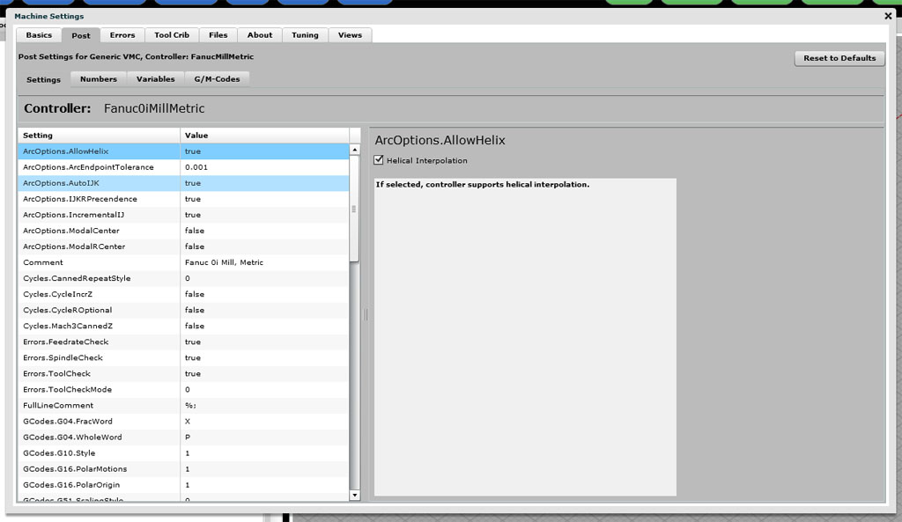
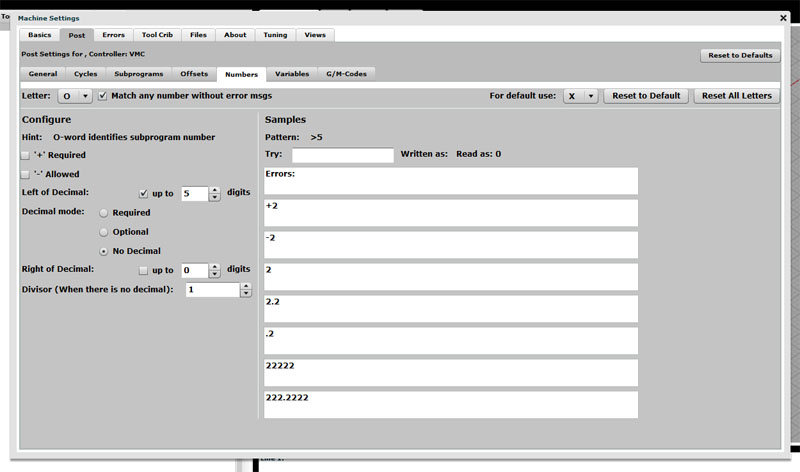
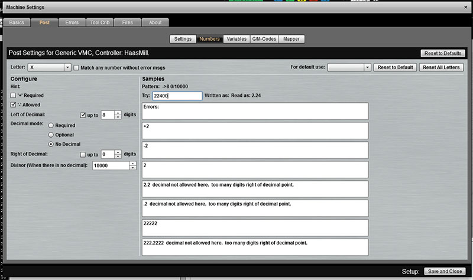
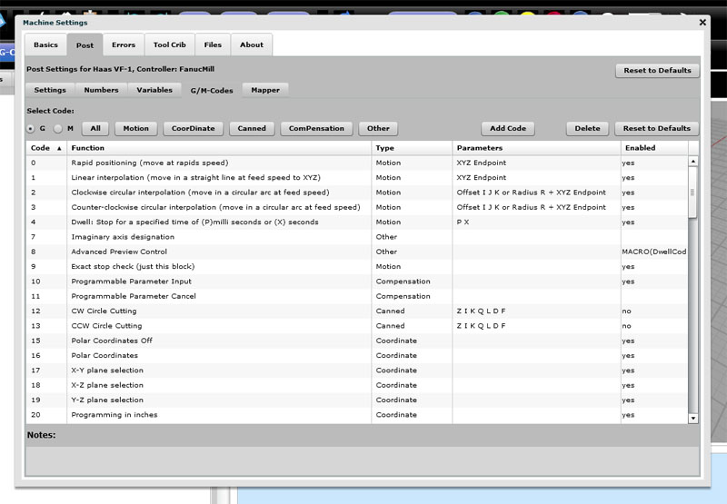
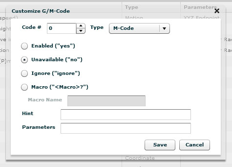
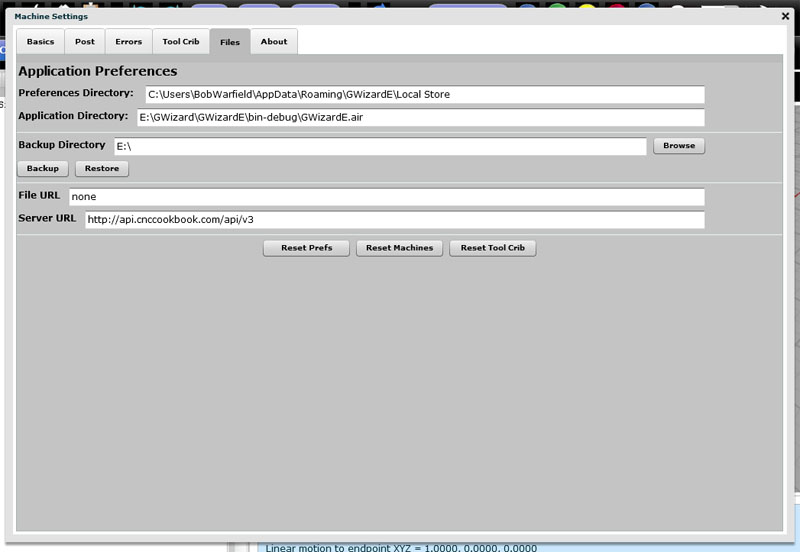
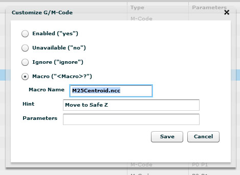
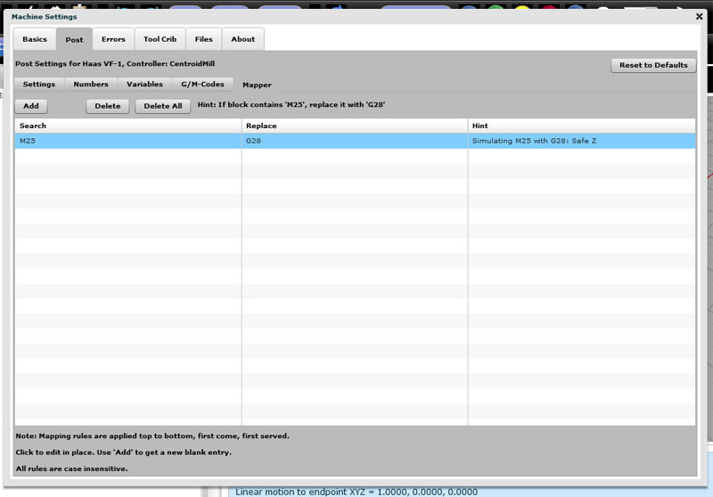

|
|
GW Editor User Guide
|
||||||||||||||||||||||||
|
G-Wizard Editor: Customizing Posts G-Wizard Editor has a number of canned posts, but we'll never have posts for all the many thousands of machines that are out there. If you can't find something close enough on our Post List, you may need to look at customizing one of our canned posts to make it work better for your controller. The Post Tab is where we really get into the guts of what makes each CNC Controller different. It's called the "Post" tab because its modelled on the "Post-Processor" concept common to CAM programs. They have to be able to cope with controller differences too. Here is the Post Tab:  The Post Tab has 4 sub-tabs:
Post | Settings Tab The Post Settings tab gives you access to a number of different variables that define the controller's behavior. You select the variable (or setting) from the scrolling list on the left and the editing pane on the right will tell you more about what the variable does as well as allow you to change it. Here's a list of each of the Settings Tab's options along with a brief description of what that option does: ArcOptions.AllowHelix: If selected, controller supports helical interpolation. ArcOptions.ArcEndpointTolerance: Endpoint radius tolerance. Its an error if distance from arc center to each of the endpoints differs by more than this amount. ArcOptions.AutoIJK: Ignore IncrementalIJK and use Auto mode if true. Auto mode will try to choose the mode (incremental or absolute IJK) that minimizes the arc errors. ArcOptions.IJKRPrecendence: If selected, when both IJK and R are specified, R has precedence (Fanuc). Otherwise, IJK has precedence. ArcOptions.IncrementalIJ: IJK is incremental if checked and absolute if not. ArcOptions.ModalCenter: If true, IJK Centers are remembered (modal) once set until they're changed. ArcOptions.ModalRCenter: If selected, R is modal. Note: With both IJK and R present, IJK are ignored. Comment: The comment is so you can identify your post more easily and does not affect the backplot behavior. Cycles.CannedRepeatStyle: Controls Canned Cycle Repeat behavior. 0 = Use K for Repeat (Fanuc), 1 = Use L for Repeat (Haas and Mach3). Cycles.CycleIncrZ: Use incremental Z for Depth on canned cycles. Z is an unsigned incremental value added to initial Z for depth. Cycles.CycleROptional: MakesR and G98 for retract optional. If no R, retraction to initial Z is assumed. Cycles.Mach3CannedZ: Adjust Z to be >= R before initial move for Mach3. Errors.FeedrateCheck: Show error if cutting with 0 feedrate. Errors.SpindleCheck: Show error if cutting without spindle running. Errors.ToolCheck: Show error if cutting without tool loaded. Errors.ToolCheckMode: Checking for tool being loaded. 0 = T + M06 required, 1 = T required. FullLineComment: Rest of line is ignored after any of these characters. Dont use spaces for this variable! GCodes.G04.FracWord: G4 Dwell Fractional Word defines which word for dwell period. Must be a whole number. Most controls allow a whole word, usually P. Some allow fractional to, usually X. GCodes.G04.WholeWord: G4 Dwell Whole Word defines word for dwell period. May have a decimal point (Fanuc, Not Mach3). Most controls allow a whole word, usually P. Some allow fractional to, usually X. GCodes.G10.Style: G10 style: 0 = G10 Px L1 P# Z~ (Mach3 Tool Length Offset), 1 = G10 Px L10 P# R~ (Fanuc Tool Length Offset). GCodes.G16.PolarMotions: G16 style: 0 = G01 Only (Mach3), 1 = All motions (Fanuc). GCodes.G16.PolarOrigin: G16 polar origin style: 0 = Relative to Curr Point (Mach3), 1 = G90 Absolute, G91 Relative (Fanuc). GCodes.G51.ScalingStyle: G51 Scaling Style: 0 = Fanuc: P scales all or use to scale IJK individual axes. XYZ scaling center., 1 = Haas: P scale factor. IJK scaling center., 2 = Mach3: XYZ are scale factors for each individual axes. Gcodes.G65.Fanuc: G65 Handling using G65 PO# L repeat (Fanuc style) if checked. GCodes.G68.Relative: Multiple G68s are relative (Not yet implemented). GCodes.G68.Style: G68 Scaling Style: 0 = Fanuc Style (alpha~ beta~ R~), 1 = Mach3 Style (A~ B~ I~ R~), 2 = Haas Style (A~ B~ R~). GCodes.G71.Retract: Retract pullback between passes (Setting 73 on Fanucs). GCodes.G71.Style: G71/72 Style: 0 = Double Block Format (Most Common), 1 = Single Block Format (Haas and Fanuc 10T/11T/15T). GCodes.G71.Type2: Allow Type 2 (pockets) if true. IncrUVW: Allow UVW for Incremental XYZ if true. Lathe.LatheXAxisDiameter: X as Diameter: Check for Diameter (G191), Uncheck for Radius programming (G190). Leave as radius for mills! Lathe.AllowLatheChamfer: Lathe Chamfer: Check to allow automatic chamfer on lathes. Lathe.AllowLatheCornerRounding: Lathe Corner Round: Check to allow automatic corner rounding on lathes. Macros.Colon4Subs: Allow ":" for O. Macros.Goto: Macro GOTO allowed. Macros.IfGoto: Macro IF..GOTO allowed. Macros.IfThen: Macro IF..THEN allowed. Macros.SetVN: Use SETVN for symbolic variable names allowed. Macros.While: Macro WHILE..DO..END allowed. Macros.WhileNest: Max. WHILE Nesting Level: 0 to 999. MCodes.M98.MaxNest: Max. Subprogram Nesting Level: 0 to max:999. MCodes.M98.ReportUndef: Report undefined subprograms as errors. (Leave blank to ignore). MCodes.M98.TryNForO: Try N# if O# undefined. MCodes.M98.Style: M98 Subprogram Call Style. The different styles are: 1 = M98 PO# Lrepeat (Mach3, Fanuc, Fadal) 2 = M98 PO# Krepeat (Older Fanuc) 3 = M98 Pxxxxyyyy (Fanuc: x = repeat, y = O#, 4 digits required) 4 = M98 PO# HN# Lrepeat (Mitsubishi) 5 = M98 Ox (x=O#) 6 = M98 PO# QN# Lrepeat MCodes.M99.IgnorePNum: Ignore M99 P# unless in main program (Haas style). Name: Name of post: This will be the filename when the post is saved. Offsets.G54Mach3Offsets: G59 P1..P255 (Mach3 style). Offsets.G54ToG59Offsets: G53..G59. Offsets.Okuma: G15 H0..H50 (Okuma style). Offsets.OkumaOneShot: G16 H0..H50 (Okuma one-shot style). Offsets.Plus300Offsets: G54.1/G54 P1..P300 (Fanuc style). Offsets.Plus48Offsets: G54.1/G54 P1..P48 (Fanuc style). PoundVars.VolatilityChoice: # Variable Volatility: 0 = Fanuc Style (#500-999), 1 = Haas Style (#100-199, #500-699, #800-999), 2 = Mach3 (#5220-#10306 = Work Offsets). StartupGCode: Startup G-Code: One line g-code program that is executed to establish the controllers startup state. This is a one-line g-code program that is run to allow you to customize the simulator's initial state. You may modify these as needed to initialize for your controller's initial state. Before the one line startup g-code is executed, the initial state is equivalent to the following:
You should only execute codes that change these defaults as it would be redundant to reinstitute them (for example by putting an "M9" in the startup g-code). These codes will not appear on the backplot, but they will show up as currently active options in the simulator. A typical use of the Startup G-Code would be to specify a G18 for a lathe. Many lathe controllers select G18 by default at startup. Tools.MaxToolSlot: Max Tool Slot: min:0, max:99999. Tools.MinToolSlot: Min Tool Slot: min:0, max:9999. Tools.ToolOffsetDigits: Tool Offset Digits: Use non-zero for Fanuc-style combined Tool Number and Offset. Word.AnyNumber: Accept any valid number with any word. Faster to backplot when this is true. Word.DefLetter: Startup G-Code: Use this word if there is no definition. Word.A: : A is used with ABC words for rotary axis coordinates. Word.F: : F-word is for feedrates. Word.G: : G-word specifies digits to identify a g-code. Word.M: : M-word specifies digits to identify an m-code. Word.N: : N-word identifies block number. Word.O: : O-word identifies subprogram number Word.R: : R-word specifies radius, cycle retract, etc.
Word.T: : T-word specifies tools. T options are also applied for D-word. Word.X: : X is used with XYZIJK words for coordinates. Word.#: : # and its digits specify a macro variable. Post | Numbers Tab The Numbers tab under Post is used to set the options for how the numbers found throughout a g-code program are to be interpreted. Each g-code word is a letter such as "G", "M", "F", or "S". Associated with each letter or group of letters is a set of options that determine what kinds of numbers can go with the letter. Here is the Numbers tab:  The Numbers tab... To use the Numbers tab, first select the letter you want to customize. Here are your choices:
After selecting the desired letter, the Numbers will show the options associated with numbers for that letter in the left column and some examples on the right. Let's go through our list of options:
In the righthand column are some tools designed to help you understand what the options you set are doing. You can enter samples into the "Try" box and see what G-Wizard thinks the value of the number is and whether it has any errors. Below the "Try" box are a series of examples that show what will happen in various cases. "Pattern" is a shorthand way of writing out the options that is used by a great many CAM programs as well as by utilities for postprocessing such as Posthaste. If you know the pattern of your number, being able ot see what pattern G-Wizard thinks you have set up should help you to match the two up. When you've got the options the way you want them, press the "Save" button below. Note that each letter must be individually saved. You can also reset the options to the default letter by letter, or at the top is a button labelled "Reset All Letters" that will go through and change all of them to the original G-Wizard defaults. Note that there is also a default format, which is chosen at the top right of the screen. When no format is defined for a particular address (letter), the format associated with the default is used. Number Example: Controllers that Use no Decimal Point Some controls like the Acramatic 900 don't use decimal points. On a control like this, if you want to rapid to X = 2.25 and Y = -1.75 you would write the following line of code:
It's easy to set up GWE to handle that sort of number format for coordinates. Here is what the settings should look like:  Setting coordinates up so they don't use a decimal point... I made the following changes to make this work: 1. Select Letter "X", which is what coordinates are tied to. 2. Make sure "Match any number" is not checked. This forces the new formating to be used. We only had to do it in this case because we want to divide the number and not just format it. If it was just formats and we didn't care about error messages, we could leave it checked. 3. Increase the number of digits available left of decimal by 4. 4. Set "Decimal mode" to "No Decimal". 5. Set right of decimal to 0 and made sure the "up to" checkbox was not checked. 6. Set the Divisor to be 10000. After making those settings, be sure to go enter a test value where it says "Try" in the right half of the screen. I entered "22400" as my test value and it shows this will be interpreted as "2.24", which is exactly what I want. Now just press "Save and Close". Note that you'll have to do a "Save and Close" for each letter you want to change.
G/M-Codes The purpose of the G/M-Codes tab is to let you tell GWE which g-codes your controller actually implements and to create custom G/M-Codes. Work on custom g- or m-codes is all done on the Setup | Post | G/M-Codes tab:  The Setup | Post | G/M-Codes tab...
Requesting New Posts and Features for Posts: GW Editor Post Survey Before we get into customizing the G/M-Codes on posts, you will also want to participate in our G-Wizard Editor Post Survey. The purpose of the survey is to tell us what the most popular posts and features of posts are that are missing from G-Wizard Editor. As time and resources permit, we will be tackling these on the basis of popularity and work involved. A very popular post that requires little effort will get a high priority. A post not being used very often that will require a lot of work will get a much lower priority. Make sure your voice is heard and participate in the survey!
Adding or Deleting Simple G- and M-Codes Adding simple g- or m-codes is easy. What we mean by "simple" is these are codes that don't much that is visible to the backplot or that affect other codes much. Machines often have all sorts of codes that fall into this category. Things like activating clamps, chip augers, and turning coolant on or off, all fall into this category. To add a code, click the "Add Code" button and you'll see this popup:  Add G- or M-Code Popup... The popup is pretty simple to use: 1. Enter the code #. So, to add a G113, put "113" into the "Code #" box. 2. Classify what type of code it is on the "Type" dropdown. Types are the same as those that appear across the top and are largely a search aid. There is only 1 type for M-Codes, so if you're creating a new M-Code, you must use the M-Code type. Otherwise, you're free to choose whichever type makes the most sense to you. 3. The behavior of your new g- or m-code will be decided by your next choice: - "Enabled" makes it do whatever G-Wizard would do with the code by default anyway. - "Unavailable" makes it an error to use the code. This is how you turn off or delete codes that your machine won't handle. - "Ignore" causes the code to be accepted without error, but GWE just ignores it. This is how you add codes such as chip augers and the like that don't affect the backplot or other simulator behavior. - "Macro" is the most complex option. It lets you write a g-code macro that is executed whenever your code is encountered in the program. More detail on how to do that later. 4. The "Hint" field lets you specify the message that will appear in the hints for the line. 5. The "Parameters" field is a comment to remind users what the parameters are to be used with this code. For example, you might put "XYZA" with G00. That's all there is to creating simple g- or m-codes. Save from the popup and close the Setup and your new g- and m-codes (or deleted codes) will be part of your post.
Using Macros for Custom G- or M-Codes As mentioned above you have the option to specify a macro that will be executed when one of your custom g- or m-codes is invoked. This allows you to create the most powerful new g- and m-codes. For example, you could create a macro that implements an entire canned drilling cycle in just the way your control expects. Let's start with a very simple example. On Centroid controls, M25 moves the machine to a safe home position. On Fanuc, G28 does the same. Let's go through the steps to create an M25 command that calls a simple macro that contains a G28. First the macro is just one line and looks like this:
Now place that macro into a file called "M25Centroid.ncc". It doesn't really matter what you call it, just remember what the name is. Next, you need to store the file in the "Posts" directory, where G-Wizard Editor will look for it. You can find this directory by bringing up the "Setup" page and clicking the "Files" tab:  Files tab shows where to find Preferences Directory... The very first entry at the top is the Preferences Directory. If you go to that Directory (or Folder if you prefer that term), there is a sub-directory called "Posts". That's where you want to put your macro files. Note: That directory also contains the as-downloaded latest versions of the canned posts. However, when you select a post for a machine profile, it gets copied to the Preferences directory. That's the post that gets modified by the Setup page, so the ones in the Post Directory stay pristine. Now that we have our macro file written and put into the Posts directory, the last step is to bring up the "Add G/M-Code" popup and configure M25:  Setting up M25 to call the M25Centroid.ncc macro... Select the "Macro" choice, enter the file name into "Macro Name" and give it a hint if you like. Now you've set up a new M-code that will call this macro each time it is encountered in the code. You could enter much more complex macros than this, but you're limited by the g-code syntax your currently selected post supports. Because of that limitation, if you need complex macro-simulated g-codes, you'll want to base your post off a post like Fanuc that has good macro facilities. A useful trick to increase the accuracy of the simulation on commands that don't affect the backplot is to enter a Dwell code (G04) and give it a time interval equivalent to how long it should take the g- or m-code to execute on your machine. That'll help ensure G-Wizard's time estimates for your program are more accurate. Here's another typical example. Haas provides alternate codes to select work offsets. So, we just set up a bunch of macros to handle it. Here is the G110 macro:
As you can see, it just calls the equivalent Fanuc style offset, since the Haas post processor is based off the Fanuc post.
Using Mapper to Change Your G-Codes to Something GWE Can Use Another useful capability is the Mapper. Essentially, Mapper does a quick search and replace on a line of g-code before the simulator accesses it. This lets you change all sorts of things around. For example, this is how the SETVN functions allow symbolic names for macro variables instead of numeric names--they use Mapper to convert the symbolic name to the right number. You could use Mapper to shift around G- or M-Codes. For example, we could take the Centroid M25 example and set up a Mapper rule that simply replaces "M25" with "G28". The reason we didn't do that is because the macro option allows for a little nicer debugging playback, but Mapper would've worked pretty nearly as well. In general, if you can use a macro, that's the preferred method, and if not, use Mapper. The Mapper is accessed via the Setup | Post | Mapper tab:  Here's Mapper set up to replace M25 with G28... Remember, Mapper just does a simple textual search and replace on your g-code line before the simulator executes it. The resulting string is not saved anywhere you can see it. Each search and replace is executed in order from top to bottom. To create a new Mapper rule, click "Add". You'll get a new row that tells you to double click each cell to type in your search and replace values. The Hint gets added to the block whenever a rule is triggered. Another important note: For performance reasons, Mapper can not be used to change simple lines containing only XYZ moves! To see an example of Mapper in action, have a look at the FADAL Mill post. It uses Mapper to convert FADAL's "Exx" work offset syntax to a Fanuc-style "G54.1 Pxx" syntax.
Making a Metric Post It's easy to change any existing post to a Metric post. There's a special setting that lets you execute an invisible line of g-code before any g-code program. Putting a G21 there will make the post a metric post. Have a look at how to do that on our QuestionX here.
Format of a Post File Note: We don't support direct editing of a post file. If you want to change them with a Text Editor, you're on your own as it's easy to screw up! With that said, we do want to document the format of these files because it is sometimes helpful to do things to them directly. The format is actually pretty simple. Here is the Centroid Mill post as an example:
That first "#include" line is an important one as it makes it easy for you to base a post on another post. Essentially, what happens, is #include will replace the line it is on with the contents of the file specified. Our Centroid Mill post is based on the Fanuc Mill post, which lives in the file "postFanucMill.pst". You'll also notice that each line is essentially an assignment statement with a semi-colon at the end. The allowable things to assign to on the left are the post variables. Most everything is converted ot a post variable whether or not it shows up as such in the Settings tab. For example, you can see that custom M25 implemented as a macro is set up as a bunch of Post variables that refer to "MCodes.M25". Number formats are handled similarly:
It's easier to review that in the Post | Numbers tab, but it is saved as that post variable. As mentioned earlier, the Post files are saved in the Preferences Directory. If you modify one, be sure you modify it there and not in the Posts directory as the latter is just for downloading new posts.
|
||||||||||||||||||||||||
|
|
|
|
|
|
|
||||||||||||||||||
|
|
|
|||||||||||||||||||||||